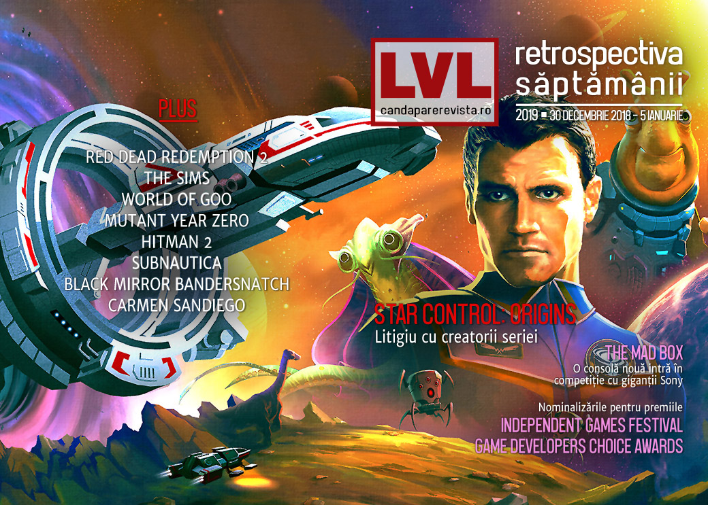

Retrospectiva săptămânii 30 decembrie 2018 - 5 ianuarie 2019
Jocul Star Control: Origins e retras de la vânzare din cauza unui litigiu pe drepturile de autor, se anunță o nouă consolă cu suport pentru VR, continuăm retrospectivele anului care tocmai s-a încheiat și privim spre ce va urma anul ăsta. Și începând de anul acesta nu mai avem Recomandarea Săptămânii, dar avem copertă.

Ştiri
- Scenaristul Erik Wolpaw se întoarce la Valve ca colaborator part-time. El a lucrat la cele două episoade Half-Life 2 și la Portal 2 și părăsise compania în 2017. (PC Gamer, Games Informer, Polygon, Gamasutra)
- Steam și GOG au retras jocul Star Control: Origins de la vânzare în urma unei cereri DMCA (blocarea conținutului pe motiv de copyright) primită de la creatorii originali ai seriei, Fred Ford și Paul Reiche III, aflați într-un litigiu cu compania Stardock, cea care deține în prezent drepturile pentru Star Control (Ars Technica, Destructoid, DSOGaming ). Ford și Reiche explică, într-o postare pe site-ul lor, motivele pentru care au trimis cererea (Polygon, Gamasutra).
- Japonia interzice revânzarea de chei digitale pentru jocuri fără permisiunea autorilor. (Destructoid, Shacknews, PCGamesN)
- Slightly Mad, studioul din spatele seriei Project CARS 2, anunță că vrea să dezvolte o consolă… pardon, „cea mai puternică consolă construită vreodată”, denumită „Mad Box”, cu suport pentru VR. (Ars Technica, PCGamesInsider.biz, Variety, GamesIndustry.biz, Wccf tech)
- Jocul de browser Town of Salem a fost victima unei scurgeri de informații care a expus datele a 7,6 milioane de utilizatori. (USgamer, TechRaptor)
- Carmen Sandiego devine serial animat produs de Netflix. (Polygon)
- Au fost anunțate nominalizările la premiile Game Developers Choice Awards (USgamer, Destructoid) și Independent Games Festival (Games Informer, PC Gamer), ambele evenimente având loc în cadrul GDC 2019 pe 20 martie.
Articole (critică, dev, design)
- Tales of an aging gamer: Why don’t I pick up a controller as often as I used to? (Ars Technica)
- A bewildered, far-from-conclusive look at the state of public gaming in Tokyo (Ars Technica)
- Soulmates - How The Souls-Like Genre Has Changed Combat In Gaming (TechRaptor)
- Gaming and Game Dev on Linux (Gamasutra)
- Walt Disney's Public Domain Works (Tedium)
- The Importance of Preservation (Unwinnable)
- As Games Continue To Get Longer, They Need To Better Accommodate Lapsed Players (Finger Guns)
- Game Design and Bandersnatch (Super Jump Magazine – Medium)
Not-a-review
- The Sims Is Teaching Me To Appreciate Architecture (Kotaku)
- World of Goo is still magnificent 10 years on (PC Gamer)
- Woah There: Embracing Slow Travel In Red Dead Redemption II (Games Informer)
- Professional Bird Watcher Gives a Fascinating Review of Red Dead Redemption 2's Wildlife (USgamer)
- It's Surprising How Much of 'Red Dead Redemption 2' Doesn't Actually Matter (Waypoint)
- Shacknews Best PC Game of 2018 - Subnautica (Shacknews)
- "Richly Deserved," by Reid McCarter (Bullet Points Monthly)
Industrie
- I'm Richard Garriott, aka Lord British, and This Is How I Work (Lifehacker)
- The indie spirit behind the rebirth and growth of the Australian games industry (Pocket Gamer)
- A Conversation With Sega's Localization Team On Censorship, Consistency, And Comedy (Games Informer)
- Talking To Yoko Taro, PlatinumGames' Takahisa Taura, And Composer Keiichi Okabe About Life, Death, And Opportunity (Games Informer)
- Moving platforms forward in an Epic Games world (GamesIndustry.biz)
- Let people know what they’re buying - A New Year’s resolution for gaming (GamesIndustry.biz)
- Discord is ready to take over the gaming world (Medium)
Istorie, retrospectivă
- Life on the Grid (The Digital Antiquarian)
- The Game Archaeologist: Project Copernicus (Massively OP)
- Screamingly Good Fun: Bringing The Mystery of the Druids to Life (Kotaku)
Dev, making of
- How developers create cinematics (PC Gamer)
- Devs weigh in on the best ways to use (but not abuse) procedural generation (Gamasutra)
- (Video) Ducking up the game design of Mutant: Year Zero (Gamasutra)
Design, world-building
- The best levels, maps, and locations 2018 (PC Gamer)
- Game Box Art Critique January: Resident Evil 2, Tropico 6, Kingdom Hearts 3 (VideoGamer)
Retrospectivă 2018
Jocuri
- The Games We Missed and Recovered During 2018 (Into The Spine)
- The best PC games of 2018 (PCGamesN)
- Damn, 2018 had a lot of really great indie games (Destructoid)
- The 10 best game reissues of 2018 (Eurogamer)
- The weird and wonderful patch notes of 2018 (PC Gamer)
- The best writing in games in 2018 (PC Gamer)
- Best PC games of 2018 (RPS)
- The 10 Best Games of 2018—and Yes, They're Ranked (Wired)
- The Best Games of 2018 (Unwinnable)
- 10 Under Appreciated Video Games Of 2018 (Finger Guns)
- The Best New Videogame Characters of 2018 (Paste)
Industrie
- Most Influential in Video Games 2018: Esports Stars, Union Leaders, Iconic Indies (Variety)
- Best of 2018: Gamasutra’s top games, devs, events and trends (Gamasutra)
2019
- 44 most anticipated games of 2019 (Shacknews)
- Predicting the big stories of 2019 (PC Gamer)
- Ready player one: the most anticipated games of 2019 (The Guardian)
- The RPS hivemind presents: The most anticipated games of 2019 (RPS)
- The 50 most anticipated games of 2019 (Polygon)
- Opinion: Here’s what 2019 will be like for the game biz (Gamasutra)
- What lies ahead? Analysts make 2019 predictions (GamesIndustry.biz)
- The State of Sports Gaming in 2019 (Hardcore Gamer)
Anunţuri şi lansări de jocuri
- Batalj beta extended to the end of January, keys are now available to everyone (PC Gamer)
- Part Live-Performance Art, Part Video Game, ‘Meditations’ Takes 365 Days to Experience (Variety)
Anunţate
- Ediții remasterizate pentru Hitman 4 și Hitman Absolution, doar pentru PS și Xbox (Variety, Games Informer, Eurogamer)
Acum cu dată de lansare
Anulate
- Skytorn (Destructoid)
Lansate
- 3 ianuarie: Braveland Heroes (early access) (Steam)
- 3 ianuarie: Medieval Kingdom Wars (Steam)
- 5 ianuarie: The Eternal Castle [REMASTERED] (Steam)
Prăvălii de jocuri
Știri
- Twitch Prime Gave Away More Than $3,000 Worth of Games in 2018 (Variety)
- Lego Lord of the Rings games removed from Steam, Xbox and PS4 stores (Eurogamer)
- Steam Windows XP Support and Windows Vista Support Comes to an End (TechRaptor)
Jocuri noi în catalog
- Xbox Game Pass adds Life is Strange 2 to its lineup (Destructoid)
- EA adds third-party games to Origin Access Premier, including Darksiders 3 (PC Gamer)
- Hyper Light Drifter headlines January’s free Twitch Prime games (Shacknews)
- January Xbox Games with Gold includes Celeste for free (Shacknews)
Jocuri gratis și free weekends
Reduceri și promoții
- Explore Fantastic Sci-Fi Games in the Humble Stardock Bundle 2019 (TechRaptor)
- The Division and Yakuza 0 head February Humble Monthly offerings (VG247)
Retrospectiva săptămânii este rubrica duminicală în care trecem în revistă evenimentele săptămânii de pe frontul de gaming: știri şi articole (scrise de alții, bineînțeles, că e mai ușor aşa), industrie, lansări, oferte de jocuri, toate numai de savurat la cafeaua de duminică dimineața.
De asemenea, rubrica e deschisă oricui vrea și poate contribui. Dacă ai citit vreun articol sau vreo știre interesantă și crezi că merită incluse în retrospectiva săptămânii, te așteptăm pe forum pe unul dintre topicurile dedicate: Știri, Articole, Gaming România].